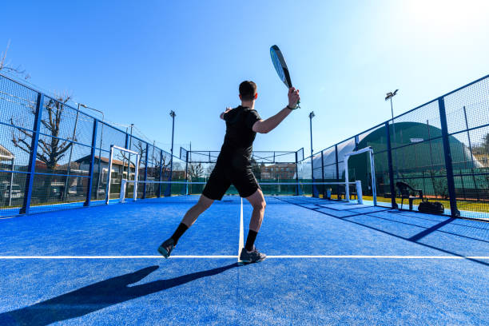

El pádel es un deporte de pelota muy popular en plena expansión con millones de practicantes en todo el mundo. Su origen se fija en México en los años 70 y su sistema de juego es muy similar al tenis, aunque con una pista de dimensiones mucho más reducidas rodeada de cuatro paredes.
El tenis y el pádel tienen estilos de juego diferentes. El tenis se enfoca más en la potencia y la precisión, mientras que el pádel se enfoca más en el control y la estrategia. En el pádel, los jugadores suelen usar más golpes suaves y colocados en lugar de golpes duros y potentes.
